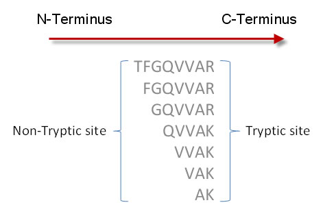

Semi-Tryptic Peptides are peptides which were cleaved at the C-Terminal side of arginine (R) and lysine (K) by trypsin at one end but not the other. The figure below shows some semi-tryptic peptides.
Higher prevalence of Semi-Typtic Peptides can indicate digestion preparation problems. It could also indicate that the instrument sensitivity is above average. For example, the instrument was able to detect low abundance Semi-Tryptic Peptides it normally would have missed.
The Percent (%) Semi-Tryptic metric is the percent of all identified peptides that are semi-tryptic.

Percent (%)
Lower: For protein standards, the digestion should not be a variable step in the process. This is sometimes done by buying or making batches of samples that were all digested at once.
The most reproducible LC-MS performance is when this metric remains in a narrow range over a series of runs. Wide variability in any metric means your process is not reproducible.
If the digestion of the sample is different, then the Percent (%) Semi-Tryptic will be different. This means that the standard being run this time does not have the same distribution of peptides as in other standards runs. This may affect all the other metrics.
Spectra with high Search Scores are easily identified by search engines because they have a good MS2 Signal to Noise , have a reasonable number of Peaks per Spectrum and the major peaks in the MS spectrum are the fragment ion peaks of the peptide.